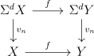
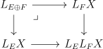
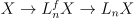
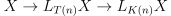
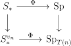

Date: 2/25/2021.
A ring spectrum \(R\) is complex oriented if it is a equipped with a ring map from the complex bordism spectrum \(MU \to R\). Such a map provides the cohomology theory \(R^*\) with Chern classes for complex vector bundles satisfying a Whitney sum formula.
Given two line bundles \(L_1,L_2:X \to BU(1)\), there is a universal formula for the Chern class of their tensor product:
An important result of Quillen says that \(MU\), the universal complex oriented ring spectrum, has the universal formal group law. In particular, \(MU_* = L\), where \(L\) is the Lazard ring, defined by the universal property \(\Hom (L,R) = FGL(R)\), where \(FGL\) is the set of formal group laws on \(R\).
However, the connection between \(MU\) and formal group laws doesn’t stop there. Recall we have the Adams-Novikov spectral sequence:
Thus via \(MU\), stable homotopy is tied to formal groups.
The study of formal groups simplifies a bit when localized at a prime. \((\cM _{fg})_{(p)}\) has a simpler presentation as a graded Hopf algebroid \((BP_*,BP_*BP)\), where \(BP_*\) is the ring \(\ZZ _{(p)}[v_1,v_2,\dots ]\), with \(|v_i| = 2(p^i-1)\). In fact this Hopf algebroid (as suggested by the notation) comes from a ring spectrum called \(BP\). In fact, \(MU_{(p)}\) decomposes into summands that are shifts of \(BP\).
\((\cM _{fg})_{(p)}\) is a well understood stack. We can draw a picture of its points \(\Spc ((\cM _{fg})_{(p)})\)
| 0 | 1 | 2 | 3 | \(\cdots \) | \(\infty \) |
| \(\cdot \) | \(\cdot \) | \(\cdot \) | \(\cdot \) | \(\cdots \) | \(\cdot \) |
There is one for each natural number and a point \(\infty \). One way to interpret each point is that it classified a formal group over an algebraically closed field up to isomorphism. The point \(n\) corresponds to a height \(n\) formal group. For example, when \(p=3\), a height \(n\) formal group is one such that if we choose coordinates so that the formal group is defined by a power series \(F\), then \(F(x,F(x,x)) = ux^{3^n} + \dots \) where \(u\) is a unit and \(\dots \) indicates higher order terms.
The point \(0\) classifies a formal group in characteristic \(0\), and the rest of the points classify formal groups in characteristic \(p\).
Another way to interpret the picture is that it classifies invariant prime ideals of \(BP_*\) in the Hopf algebroid \((BP_*,BP_*BP)\). The point \(n\) corresponds to the ideal \((v_0,v_1,\dots ,v_{n-1})\) where \(v_0 = p\).
The space also has a topology, where the open sets are the intervals from \(0\) to \(n\). In particular, specialization increases height.
Two important families of complex oriented cohomology theories are Morava E-theory and Morava K-theory.
The \(n^{th}\) Morava E-theory, denoted \(E_n\), is an \(\EE _{\infty }\)-ring spectrum that depends on a choice of perfect field \(k\) and formal group law on \(k\) of height \(n\). However, none of the choices will matter for anything said here about it. Its coefficient ring is \((E_n) _* = W(k)[[v_1,\dots ,v_{n-1}]][\beta ^{\pm 1}]\) where \(|\beta | = 2\), and \(W(k)\) denotes the Witt vectors of \(k\), and its formal group law is the universal deformation of the formal group law on \(k\), which was studied by Lubin and Tate.
One of its important properties is that \((E_n)_*(X)=0\) if and only if \(BP_*(X)\) is supported at height \(\geq n+1\) on \(\cM _{fg}\). Thus it detects information from height \(0\) to height \(n\).
The \(n^{th}\) Morava K-theory, denoted \(K(n)\), is an \(\EE _1\)-ring spectrum with coefficient group \(K(n)_* = \FF _p[v_n^{\pm 1}]\). Once again, there are different versions of it, but the different versions will not be relevant here. \(K(n)\) can be constructed from \(BP\) by iteratively taking cofibres by \(v_i\) for \(i \neq n\) and inverting \(v_n\). \(K(\infty )\) is just \(H\FF _p\). An important property of \(K(n)\) is that it is a field, since its homotopy groups are a graded field. This means that any module over \(K(n)\) is free.
\(K(n)\) detects information at height \(n\). For example, \((E_n)_*(X)=0\iff (\oplus _0^n K(n))_*X = 0\).
Next, we turn to some fundamental results in chromatic homotopy theory. The first is the nilpotence theorem, due to Devinatz, Hopkins, and Smith.
Theorem 2.1 (Nilpotence Theorem v1). Let \(R\) be a ring spectrum, and \(\alpha \in \pi _n(R)\) be an element sent to \(0\) in \(MU_n(R)\). Then \(\alpha \) is nilpotent.
This says that \(MU\) is able to detect nilpotence in rings. An equivalent version of the theorem is
Theorem 2.2 (Nilpotence Theorem v2). Let \(f:X \to Y\) be a map of finite spectra such that \(f\otimes MU\) is \(0\). Then \(f^{\otimes n}:X^{\otimes n} \to Y^{\otimes n}\) is null for \(n \gg 0\).
This formulation emphasizes the fact that \(MU\) detects nilpotence phenomena for finite spectra. When working \(p\)-locally, \(MU_*f = 0\) iff \(BP_*f = 0\) iff \(K(n)_*f=0\) for all \(n\).
Definition 2.3. A finite complex/spectrum \(X\) is type \(n\) if \(K(i)_*(X) = 0\) for all \(i <n\) and \(K(n)_*X \neq 0\).
Remark 2.3.1. Every nonzero \(p\)-local finite spectrum is type \(n\) for some \(n\). This is because for \(i\gg 0\), the \(K(i)\)-based Atiyah-Hirzebruch spectral sequence degenerates for degree reasons for a fixed finite spectrum \(X\), so \(K(i)_*(X) = (H\FF _p)_*(X)\otimes _{(H\FF _p)_*}K(i)_* \neq 0\).
Remark 2.3.2. For a finite spectrum \(X\), \(K(m)_*X = 0 \implies K(m-1)_*(X) = 0\). This is essentially because its \(MU\)-homology is a coherent sheaf over \(\cM _{fg}\), so has closed support. This shows that for a type \(n\) spectrum \(X\), \(K(m)_*(X) \neq 0\) for \(m\geq n\).
Definition 2.4. Let \(C\) be a stable \(\infty \)-category. A thick subcategory \(C' \to C\) is a stable subcategory closed under retracts.
Example 2.4.1. Let \(\Sp ^{\omega }_{(p)}\) be the category of \(p\)-local finite spectra, and let \(\Sp _{\geq n}\) be the category of type \(\geq n\) spectra. Then \(\Sp _{\geq n} \to \Sp ^{\omega }_{(p)}\) is a thick subcategory.
It turns out these are all the examples. This is the content of the following result, which is a corollary of the nilpotence theorem, due to Hopkins and Smith.
Theorem 2.5 (Thick subcategory Theorem). Let \(C \subset \Sp ^\omega _{(p)}\) be a nonzero thick subcategory. Then \(C = \Sp _{\geq n}\) for some \(n\).
It is true that \(\Sp _{\geq n}\) are distinct as \(n\) varies, but showing this requires a bit more work.
Definition 2.6. Let \(X\) be a finite complex/spectrum. A \(v_n\)-self map \(v_n:\Sigma ^d X \to X\) is a map that
The use of \(v_n\) as a name for the \(v_n\)-self map is slightly misleading: a more appropriate name is \(v_n^k\), because when they exist, they can be chosen to induce multiplication by a power of \(v_n\) on \(K(n)_*\).
Using a construction due to Smith, Hopkins and Smith proved the following result:
From this theorem, it is easy to see why \(\Sp _{\geq n}\) are distinct. For example, the sphere \(\SP \) is a type \(0\) but not type \(1\) spectrum. Given a type \(n\) but not type \(n+1\) spectrum, we can take the cofibre of a \(v_n\)-self map to obtain a type \(n+1\) but not type \(n+2\)-spectrum, thereby inductively distinguishing the categories \(\Sp _{\geq n}\).
\(v_n\)-self maps are well behaved. After replacing one with a sufficiently large power, we can assume
Given a map of finite type \(n\)-spectra \(f:X \to Y\) equipped with a \(v_n\)-self map, we can replace the \(v_n\)-self maps by an iterate to make the diagram below commute:

In this sense, \(v_n\)-self maps are almost functorial. Note that if we take \(f\) above to be the identity, we see that \(v_n\)-self maps are also unique up to taking iterations.
The moduli stack of formal groups is filtered by the open substacks of formal groups of height \(\leq n\). Chromatic localizations are a way to turn this algebraic filtration into a topological one, and their study was pioneered by Doug Ravenel. To talk about them, we will briefly review Bousfield localizations of the category \(\Sp \).
Given a spectrum \(X\), there is an adjunction
The composite \(i\circ L_X\) will often be shortened to \(L_X\). The unit of the adjunction gives a natural map \(Y \to L_XY\), characterized by the fact that it is an \(X\)-equivalence to an \(X\)-local object.
The construction \(L_X\) doesn’t depend on all of \(X\) but rather on the Bousfield class, that is \(\langle X\rangle = \{X\text{-acyclic objects}\}\).
We can often break up a Bousfield localization into smaller pieces, and glue them back together.
Lemma 3.1. Suppose \(L_E\) preserves \(F\)-acyclic objects. Then

is a pullback square.
Proof. Let \(P = L_EX\times _{L_EL_FX}L_FX\).
If \(X\) is a type \(n\) spectrum, We can invert a \(v_n\)-self map to get \(X[v_n^{-1}]\), which is called the telescope of \(X\) and denoted \(T(n)\). By the almost uniqueness of \(v_n\)-self maps, \(T(n)\) only depends on \(X\). Essentially by the thick subcategory theorem, \(\langle T(n)\rangle \) only depends on \(n\).
There are two flavors of chromatic localizations that are studied. The first are the telescopic and finite localizations \(L_{T(n)}\) and \(L_{n}^f:=L_{\oplus _{0}^nT(i)}\). The second are the \(K(n)\) and \(E_n\) localizations \(L_{K(n)}\) and \(L_n:=L_{E(n)} = L_{\oplus _0^n K(n)}\). The hope is that we can understand stable homotopy via the towers of localizations
The two flavors of localizations are related to each other. If \(Y\otimes T(n) = 0\), then \(X\otimes T(n) \otimes K(n) = 0\), but \(T(n)\otimes K(n)\) is a nonzero sum of copies of \(K(n)\), so \(X\otimes K(n) = 0\). Thus we get factorizations of the natural maps
 , 
An important property of \(L_nX\) is that it is colimit preserving:
The same is true of \(L_n^f\), but it is easier to prove, as will now be explained.
Lemma 3.3. The \(L_n^f\)-acyclic spectra coincide with \(\Ind (\Sp _{\geq n+1})\): that is they are filtered colimits of type \(\geq n+1\) spectra.
Proof. It is easy to see that \(\Ind (\Sp _{\geq n+1})\) consists of \(T(n)\)-acyclic spectra; we will show the reverse inclusion. First let \(n = 0\), and suppose \(X\) is \(T(0)\)-acyclic. Then there is a cofibre sequence
Now we can induct on \(n\). For example, let \(n=1\), and assume that in addition, \(X\) is \(T(1)\)-acyclic. Then there is a cofibre sequence
Since \(L_n^f\) kills a category that is generated by compact objects, it preserves filtered colimits. It also preserves finite colimits, so \(L_n^f\) preserves all colimits. The only colimits preserving endomorphisms of \(\Sp \) are given by tensoring, so we learn
The corollary above is one way to see that \(L_m^f\) preserves \(\oplus _{m+1}^nT(i)\)-acyclic objects. Thus we learn from Lemma 3.1:
Note that the same is true with \(K(n)\) replacing \(T(n)\) and \(L_n\) replacing \(L_n^f\) by the smashing theorem. These pullback squares allow one to reduce the study of \(L_n^f\) to the study of \(L_{T(n)}\).
The exact relation between \(L_{T(n)}\) and \(L_{K(n)}\) is not known. It was conjectured by Ravenel that there is no difference between the two.
This conjecture is known to be true for \(n=1,0\), and many believe it to be false otherwise. Nevertheless, so long as we are concerned with rings or finite spectra, the nilpotence theorem implies that \(T(n)\) and \(K(n)\) behave similarly.
Lemma 3.7. If \(R\) is a ring spectrum, \(R\otimes T(n) = 0 \iff R\otimes K(n) = 0\).
Proof. Let \(V_n\) be a type \(n\) spectrum that is an \(\EE _1\)-ring. For example, one can start with any type \(n\) spectrum \(X\) and replace it with its endomorphism ring \(X\otimes DX\). Let \(v_n\) be a central \(v_n\)-self map, so that \(T(n) = V_n[v_n^{-1}]\) is a ring. Then \begin{align*} & R\otimes T(n) = 0\\ \iff & \text{the unit of $R\otimes T(n)$ is nilpotent}\\ \iff & \text{the unit of $R\otimes T(n)\otimes K(m)$ is nilpotent for all $m$}\\ \iff & \text{the unit of $R\otimes T(n)\otimes K(n)$ is nilpotent}\\ \iff & R\otimes T(n)\otimes K(n) = 0\\ \iff & R\otimes K(n) = 0 \end{align*}
Where in the second step, we use the nilpotence theorem, and in the last step we use the fact that \(T(n)\otimes K(n)\) is a nonzero free \(K(n)\)-module. □
Now we will look the telescopic localization functors more in depth and see their relation to unstable homotopy theory. We will set \(n\geq 1\), and let \(V_n\) denote a type n space with a \(v_n\)-self map \(v_n:\Sigma ^dV_n\to V_n\).
Definition 4.1. For a space/spectrum \(X\), the \(v_n\)-periodic homotopy groups with coefficients in \(V_n\), denoted \(v_n^{-1}\pi _*(X;V_n)\) are defined as \(v_n^{-1}\pi _*(\Map _*(V_n,X))\).
It isn’t hard to see that \(v_n^{-1}\pi _*(X;V_n)\) is the homotopy groups of a \(d\)-periodic spectrum called \(\Phi _{V_n}(X)\), given by the formula \(\colim _k \Sigma ^{\infty -kd}\Map _*(V_n,X)\) where the colimit is uses the map \(\Map _*(V_n,X) \to \Map _*(\Sigma ^dV_n,X)=\Omega ^{d}\Map _*(V_n,X)\) induced by \(v_n\).
Note that if \(X\) is a spectrum, then \(\Phi _{V_n}(X)\) is the spectrum \(X\otimes DV[v_n^{-1}] = X\otimes T(n)\).
Definition 4.2. If \(f:X \to Y\) is a map of spaces or spectra, \(f\) is a \(v_n\)-periodic equivalence if \(\Phi _{V_n}X \to \Phi _{V_n}Y\) is an equivalence.
Essentially by the thick subcategory theorem, the notion of \(v_n\)-periodic equivalence only depends on \(n\).
Lemma 4.3. Let \(n\geq 1\), and \(X\) be a spectrum. Then
Proof. \((1)\): This follows from the adjunction between \(\Sigma ^\infty \) and \(\Omega ^\infty \).
\((2)\): The fibre is bounded above, and \(v_n^{-1}\pi _*(Y;V_n) = 0\) whenever \(Y\) is bounded above because \(|v_n|>0\), and the homotopy groups of the mapping space are bounded above.
\((3)\): The fibre \(F \to X \to X^{\wedge }_p\) is \(\SP /p\)-acyclic. This means that it is killed by tensoring with \(\SP /p^m\) for all \(m\). But for any type \(n\) spectrum, some power of \(p\) acts by \(0\), so the same is true for \(T(n)\). Thus \(F\otimes \SP /p^k\otimes T(n) = F\otimes (T(n)\oplus \Sigma T(n)) = 0\) for \(k\gg 0\), so \(F\) is \(T(n)\)-acyclic. □
The above lemma, along with the fact that \(\Phi _{V_n}X= X\otimes T(n)\) implies that for \(n\geq 1\), \(L_{T(n)}X\) only depends on \(\Omega ^\infty X\) as an \(\EE _{\infty }\)-space. A wonderful insight of Bousfield and Kuhn is that in fact it only depends on \(\Omega ^\infty X\) as a space!
To see this, we start by thinking about the construction taking a pair of a type \(n\) space and \(v_n\)-self map \((V_n,v_n)\) to the functor \(\Phi _{V_n}:S_* \to \Sp \). If we replace \(v_n\) by an iterate, it is easy to see that it doesn’t change \(\Phi _{V_n}\), so since \(v_n\)-self maps are unique, the data of \(v_n\) is not important in the construciton of \(\Phi _{V_n}\).
Secondly, if we replace \(V_n\) by \(\Sigma V_n\), \(\Phi _{V_n}\) changes to \(\Phi _{\Sigma V_n} = \Sigma ^{-1}\Phi _{V_n}\). Thus \(\Phi _{V_n}\) only depends on the spectrum \(\Sigma ^\infty V_n\).
These observations can be souped up to construct a functor
Definition 4.4. The Bousfield-Kuhn functor \(\Phi \) is a functor \(S_* \to \Sp \) given by \(\Phi := \lim _{V \to \SP }\Phi _V\).
Another way to describe it is that you right Kan extend the functor \( \Sp _{\geq n} \to \Fun (S_*,\Sp )\) along the inclusion to \(\Sp \), and evaluate on \(\SP \). An important property of \(\Phi \) is that it realizes the factorization of \(L_{T(n)}\) through \(\Omega ^\infty \) as a space:
Proposition 4.5. \(\Phi \Omega ^{\infty }X = L_{T(n)}X\).
Proof. We have from the definition and our previous observations \(\Phi \Omega ^{\infty }X = \lim _{V \to \SP }\Phi _V X = \lim _{V \to \Sp } DV[v_n^{-1}]\otimes X\).
Each term in the limit is \(T(n)\)-local, so it agrees with \(L_{T(n)}(DV[v^{-1}]\otimes X) = L_{T(n)}(DV\otimes X) = L_{T(n)}(X^V)\).
Putting this together, we have
To see the claim we recall that we had a cofibre sequence
Some other important facts about the Bousfield-Kuhn functor are:

A consequence of the factorization in the proposition above is:
Corollary 4.6. Let \(f:X \to Y \in \Sp \) be a map. If \(\Sigma ^\infty \Omega ^\infty f\) is a \(T(n)\)-equivalence, so is \(f\).
Proof. By assumption, \(L_{T(n)}\Sigma ^{\infty }\Omega ^\infty f\) is an equivalence. But this is equal to \(\Phi \Omega ^\infty \Sigma ^\infty \Omega ^\infty f\), and by the triangle identity for the adjunction between \(\Sigma ^\infty \) and \(\Omega ^\infty \), the map \(\Phi \Omega ^\infty f\) is a retract of \(\Phi \Omega ^\infty \Sigma ^\infty \Omega ^\infty f\). Thus \(\Phi \Omega ^{\infty }f = L_{T(n)}f\) is also an equivalence. □
The functor \(\Sigma ^\infty \Omega ^\infty \) doesn’t preserve \(T(n)\)-local equivalences in general.
Example 4.6.1. \(H\ZZ \) is \(T(n)\)-acyclic, but \(\Sigma ^\infty \Omega ^\infty H\ZZ \) is a sum of spheres, so is not.
Nevertheless, for sufficiently connected maps, \(\Sigma ^\infty \Omega ^\infty \) does preserve \(T(n)\)-local equivalences. Here is a version of that statement for the finite localizations.
Proposition 4.7. Let \(n\geq 1\). There is an \(m\geq 2\) such that:
Proof. \((1)\): Omitted. This relies on results of Bousfield on unstable localization.
\((2)\): The fibre \(F\) satisfies the hypotheses of \((1)\). Then \(f\) can be identified with \(\colim _YF \to \colim _Y*\), which is a \(T(n)\) equivalence since \(F\) is \(L_n^f\)-acyclic.
\((3)\): Apply \(\Omega ^\infty \) and \((2)\). □